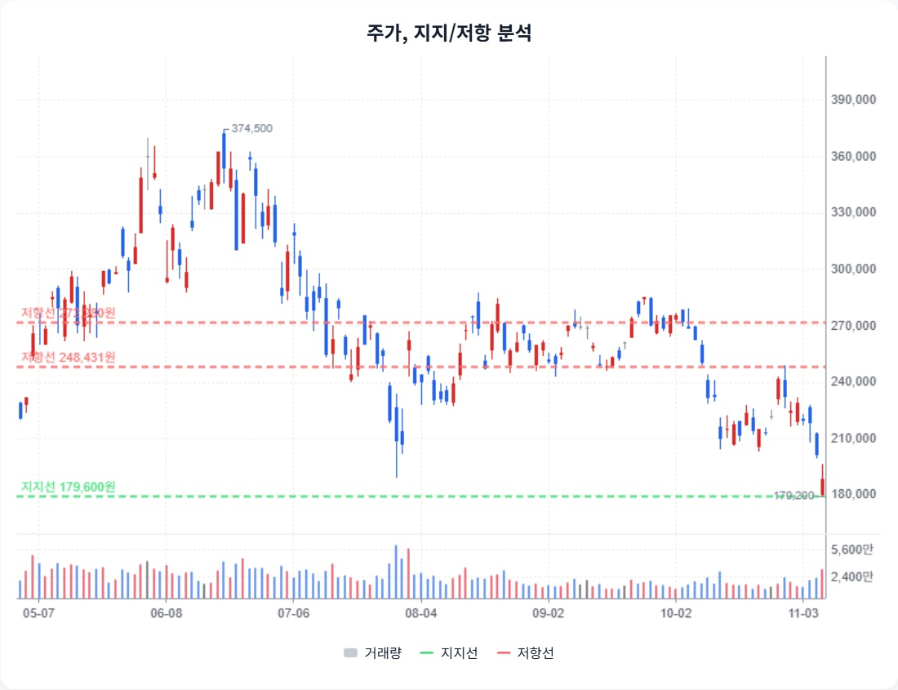

삼성전자 · StockEasy 읽기용 정리
첨부 확인 2026-11-08 · 핵심 내용을 문단별로 재구성했습니다. 원문 전체 전사가 아니며, 차트는 첨부 화면에서 발췌했습니다. 원문의 매수·매도 표현과 가격 구간은 자동 매매 신호로 채택하지 않았습니다.
1. HBM 성장과 계약의 확정성을 구분
StockEasy 원문 요약 · 주장과 가정 포함
원문은 HBM 성장과 장기 공급계약이 메모리 사이클의 변동성을 줄일 가능성을 제시합니다.
2. EPS와 정상화 이익의 기준 맞추기
StockEasy 원문 요약 · 주장과 가정 포함
원문은 3분기 EPS 12,851원, 정상화 EPS 39,344원과 2027년 EPS 74,427원 등을 제시합니다.
3. 낮은 PBR만으로 가격 바닥을 확정하지 않기
StockEasy 원문 요약 · 주장과 가정 포함
원문은 BPS85,682원과 과거 저점 PBR0.9~1.0배를 사용한 약7.7만~8.6만원 계산 구간을 제시합니다. 현금흐름과 투자·환원 정책도 함께 설명합니다.
4. 가격 기준과 차트 관찰
StockEasy 원문 요약 · 주장과 가정 포함
원문 본문의21만~23만원, 기술 분석188,700원 등 가격 기준이 섞여 있습니다. 아래 차트는 원문이 제시한 지지·저항을 보존한 것입니다.

StockEasy 첨부 원문 발췌 · 자료 시점/공급자가 다른 외부 차트이며 현재 시세가 아닙니다.